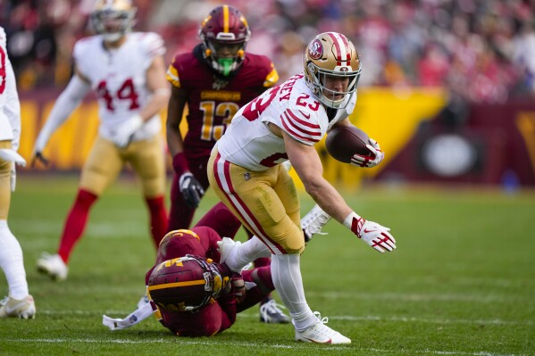
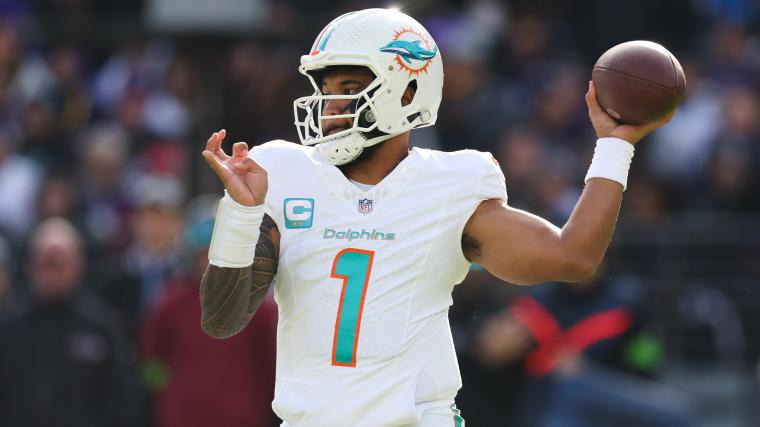
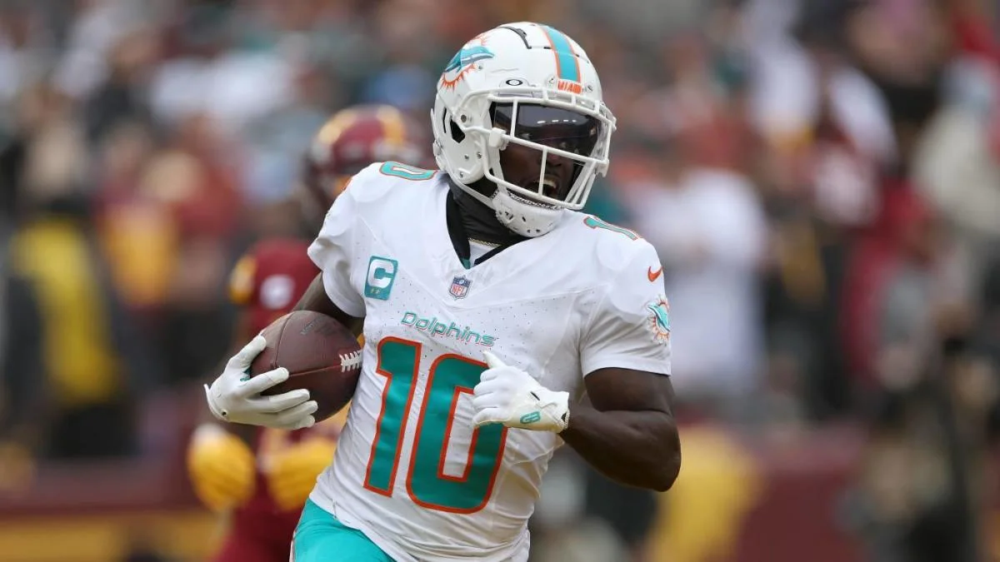

In this Season, many players have excelled to incredible heights, but some definitely stood out of the pack. These offensive players took their position and team to success (mostly). This was an odd year, with many under the radar players doing incredible, and all-stars being underwhelming and riddled with injuries.
No surprise to most, as McCaffrey has been incredible for a long time now, being a key part is the 49ers success this season. 300 yards clear of the player in 2nd, McCaffrey has been dominant this season. unstoppable when he's running, which has been quite a lot this season. McCaffrey claims his spot as the best RB in the league, and seems to be there to stay. 
Tua and Miami have had a great season, being real AFC threats. Tua has a ton of options for passing, including Tyreek Hill, who has been incredible this season. But none of that should truly discredit him. We saw last year how the Dolphins without Tua are not as good as when they have him. Tua, even with his weapons, has been incredible, consistently landing accurate passes, having the highest completion percentage of any starting QB in the league. Tua's game often gets discredited, but his season has been extraordinary. 
Tyreek has been unstoppable this season, tearing through defense after defense without stopping. his incredible speed has been the major highlight of his game, as nobody can seem to stop him. even with Waddle, another incredible wide reciever, Tyreek stays dominant with his yards. with less receptions than others in the top 5 for yards, he still manages to have far more yards. A player everyone knew would shine, but not many thought to this degree. 